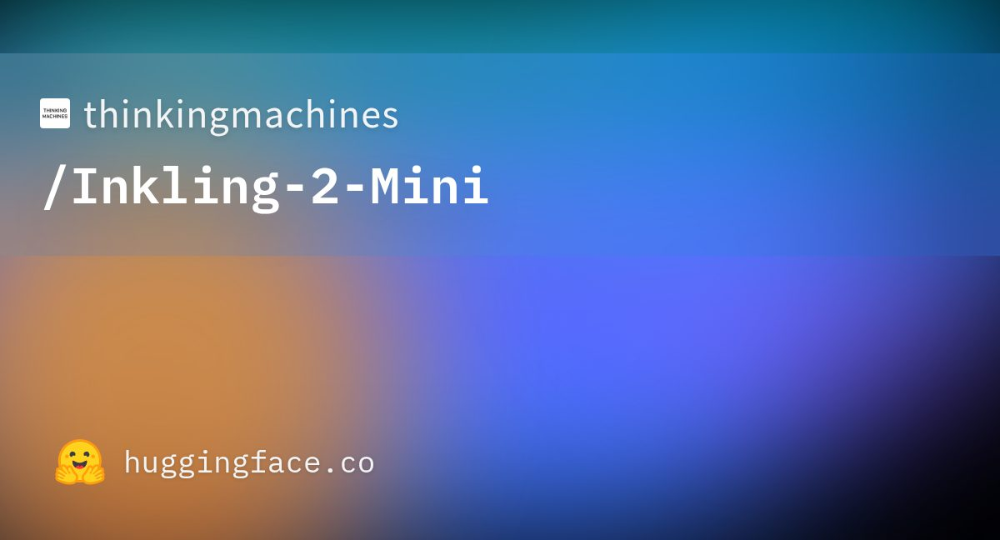
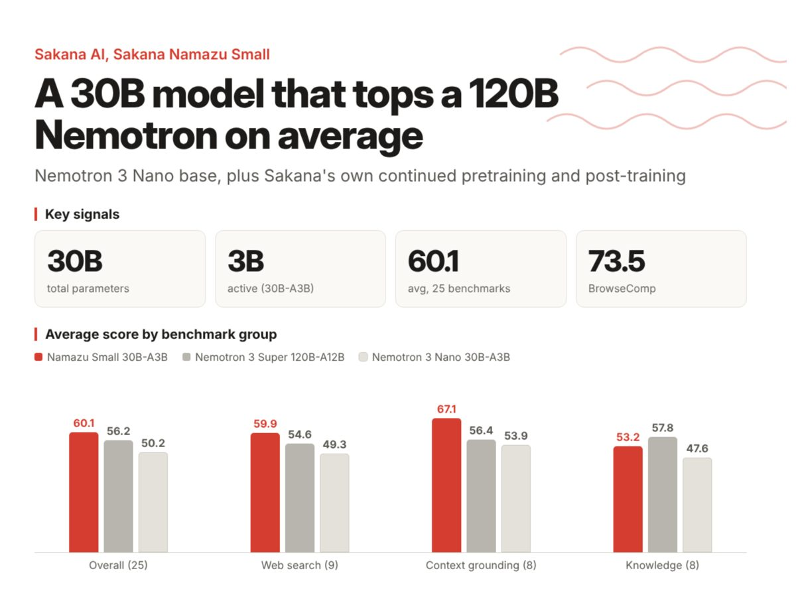

4 AI stories to know today
4 infos IA à retenir aujourd'hui

What matters is that an AI can do this kind of maths
Ce qui compte, c'est qu'une IA fasse ce genre de maths
Complexity researcher Scott Aaronson says proving the Riemann hypothesis would not change daily life. The real stake, in his view, is that AI is able to do it. He cites OpenAI proofs on matrix multiplication and the Fourier transform, with lower bounds, and now thinks a proof of P ≠ NP is "not far off".
Le chercheur en complexité Scott Aaronson juge que prouver l'hypothèse de Riemann ne changerait pas le quotidien. Le vrai enjeu, selon lui, est que l'IA en soit capable. Il cite des preuves d'OpenAI sur la multiplication de matrices et la transformée de Fourier, avec des bornes inférieures, et pense désormais qu'une preuve de P ≠ NP n'est « pas loin ».

GPT-6.2 Astra: usage limits now run out 40% faster
GPT-6.2 Astra : les limites tombent 40 % plus vite
A billing bug had given wrong discounts on Astra and Sol. After the fix, limits are hit 40% faster on Astra and 25% faster on Sol than last week. OpenAI is charging nothing retroactively and is giving Go, Plus, Pro and Business subscribers an extra reset.
Un bug de facturation avait donné de mauvaises remises sur Astra et Sol. Après correction, les limites sont atteintes 40 % plus vite sur Astra et 25 % sur Sol, par rapport à la semaine dernière. OpenAI ne facture rien de rétroactif et offre un « reset » supplémentaire aux abonnés Go, Plus, Pro et Business.

Inkling-2-Mini stays at the top of the trends
Inkling-2-Mini reste en tête des tendances
A multimodal model from Thinking Machines, 26 billion parameters, Apache 2.0 licence. It has over 6,300 likes. Its GGUF version by Unsloth has passed 2.4 million downloads.
Modèle multimodal de Thinking Machines, 26 milliards de paramètres, licence Apache 2.0. Il compte plus de 6 300 likes. Sa version GGUF par Unsloth dépasse 2,4 millions de téléchargements.

Namazu Small: 30 billion parameters that beat a 120B model
Namazu Small : 30 milliards de paramètres qui battent un modèle de 120
Built on Nemotron 3 Nano, it scores 60.1 on average across 25 benchmarks, against 56.2 for Nemotron 3 Super. It shines at web research (BrowseComp 73.5) but is weak on raw knowledge (SimpleQA 6.8). Scores are published by Sakana; the weights are not released.
Bâti sur Nemotron 3 Nano, il obtient 60,1 de moyenne sur 25 tests, contre 56,2 pour Nemotron 3 Super. Il brille en recherche web (BrowseComp 73,5), mais reste faible en connaissances brutes (SimpleQA 6,8). Scores publiés par Sakana, poids non publiés.